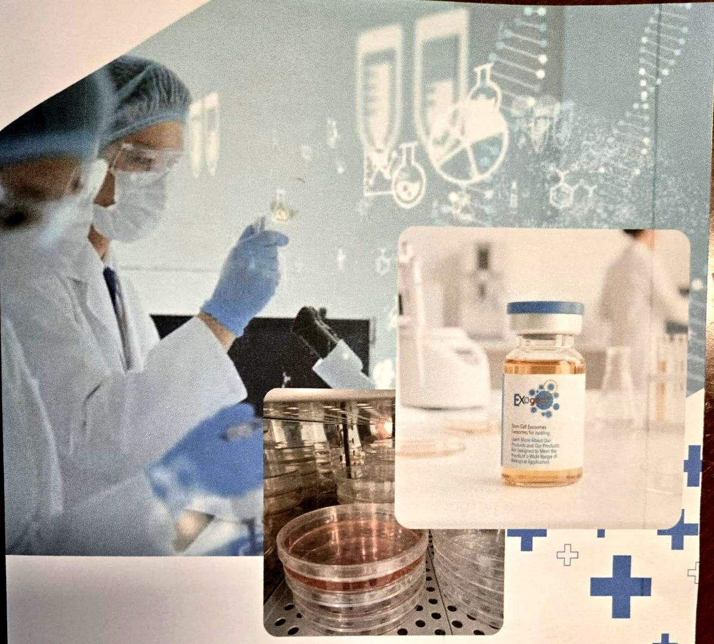
Брошюра 1 · Экзосомы
Природные клеточные мессенджеры, созданные для передовой регенерации кожи и тканей
Строгие оценки по стандарту GLP подтверждают безопасность каждой партии:
| Показатель | Результат | Спецификация | Статус |
|---|---|---|---|
| Внешний вид | Слегка розоватая жидкость | — | PASS |
| Уровень pH | 7,57 | 7,0–8,0 | PASS |
| Общий белок | 30,2 мкг/мл | ≥ 15,0 мкг/мл | PASS |
| Абсолютная чистота | 100 % отрицательно (нет клеток и тканей исходного материала, контаминации и т. п.) | н/п | PASS |
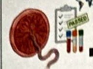
Скрининг донора и проверка плаценты на патогенные маркеры.
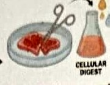
Обработка ткани и выделение стволовых клеток методом ферментативного расщепления.
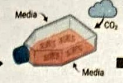
Выращивание стволовых клеток в специализированной среде в контролируемых условиях.
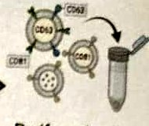
Очистка и сбор конечной популяции экзосом.
Exogent производится по собственной технологии Metropobio — первой в мире системе, измеряющей уровень глутатиона (GSH) в живых клетках в режиме реального времени.
Платформа оценивает состояние стволовых клеток по четырём показателям: средний уровень глутатиона (GM), гетерогенность глутатиона (GH), способность к регенерации глутатиона (GRC) и устойчивость к окислительному стрессу (ORC).
Из материала разных доноров выделяются стволовые клетки высшего качества (HQ‑SC), поэтому каждая производственная партия даёт равномерное распределение частиц, высокую антиоксидантную ёмкость и быструю пролиферацию.
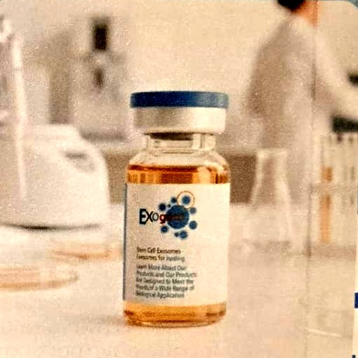
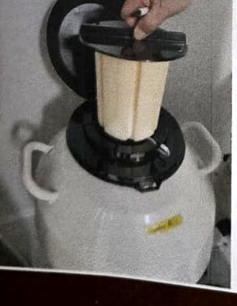
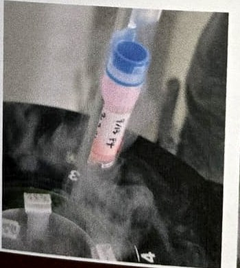
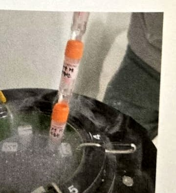
Брошюра 2 · PRP‑система
Самая востребованная в мире передовая система PRP со стволовыми клетками, созданная для превосходных клинических результатов.
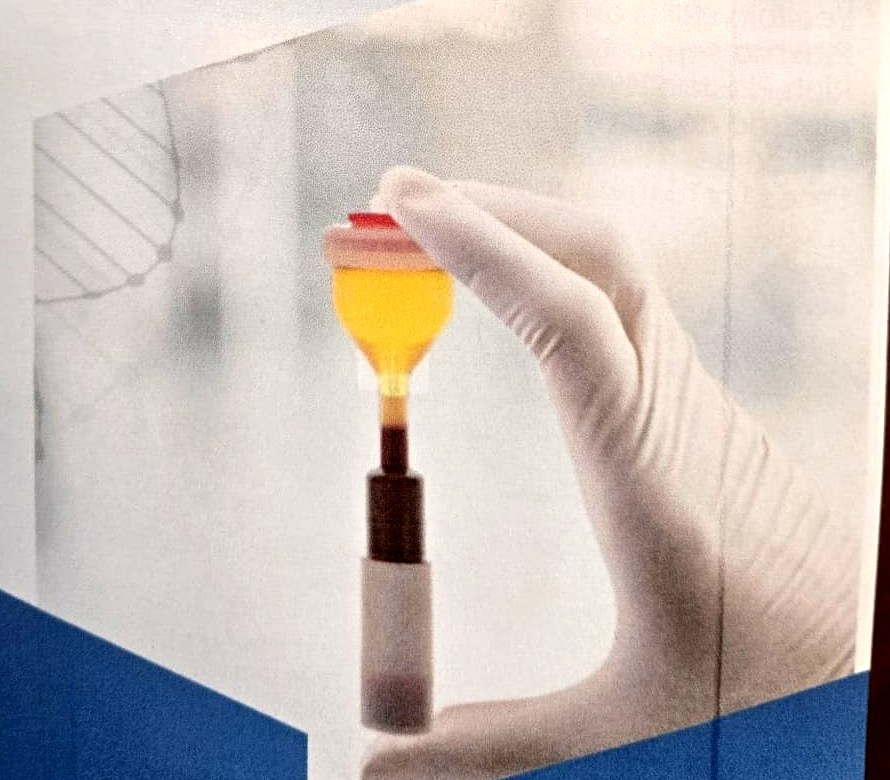
Ключевые моменты
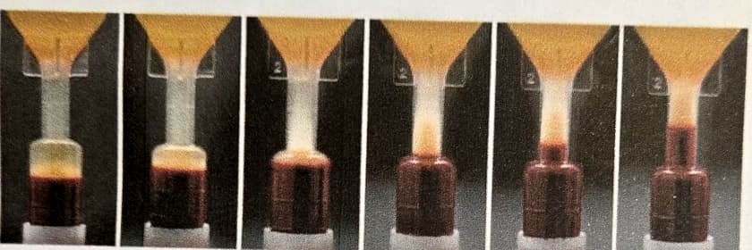
Ycellbio PRP — оптимальная система для сепарации обогащённой тромбоцитами плазмы. С клинической точки зрения обогащённая тромбоцитами плазма (PRP) — это объём аутологичной плазмы с концентрацией тромбоцитов более 1 миллиона на микролитр, то есть в 4–5 раз (и более) выше исходного уровня.
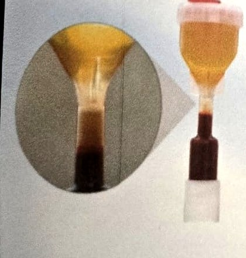
При сепарации цельной крови система Ycellbio чётко делит её на три основных слоя:
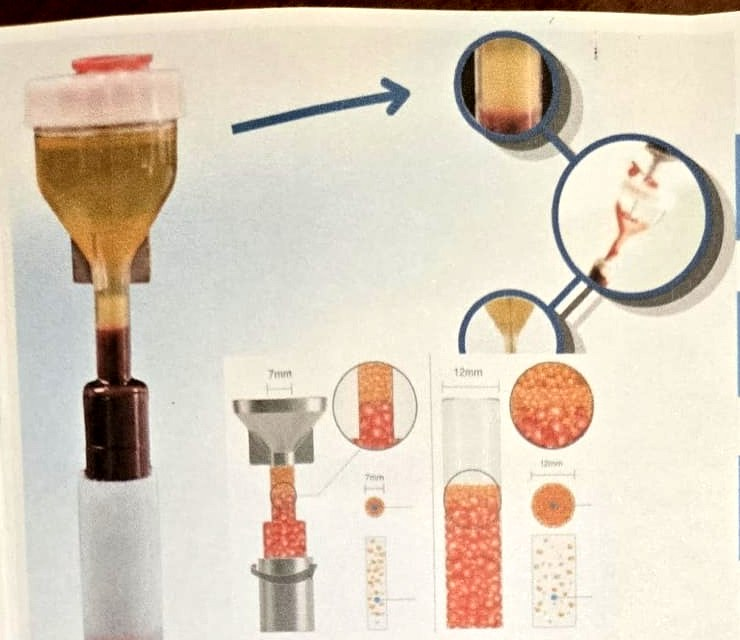
Полезная модель запатентована · подана заявка PCT
Разработана, чтобы преодолеть традиционные ограничения — потерю тромбоцитов при центрифугировании и «пустой» объём широких пробирок.
Внутренний диаметр всего 7 мм позволяет хорошо видеть лейкоцитарную плёнку и плотно концентрировать её, сводя к минимуму тромбоциты, оседающие на стенках.
Поворотный регулятор в основании набора позволяет легко менять высоту слоя клеток крови, обеспечивая точное позиционирование границы.
Максимизирует сбор PRP, эффективно исключая эритроциты (RBC).
Минимальный объём крови — 13,5–15 мл с 1,5 мл антикоагулянта.
Выполняется на любой стандартной центрифуге — набор полностью совместим с бакет‑роторами и угловыми роторами.
Поверните нижний регулятор, чтобы точно поднять слой клеток крови и выровнять границу для чистой аспирации.
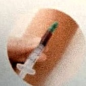
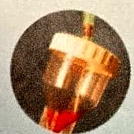
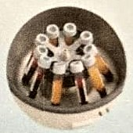
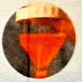
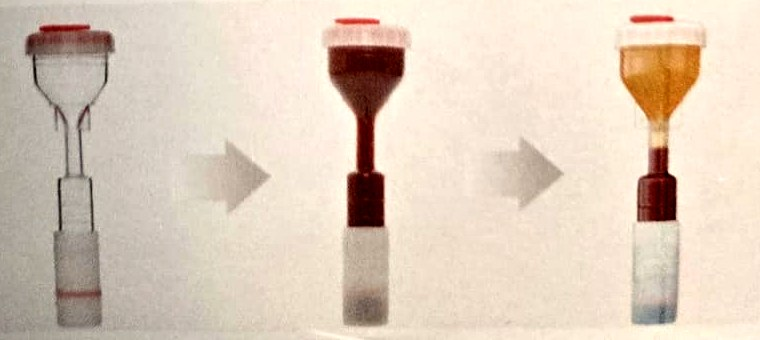
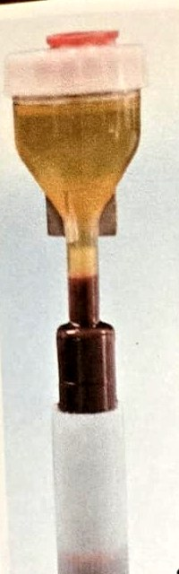
Обеспечивает плотную концентрацию тромбоцитов свыше 1 500 000–1 604 000/мкл (в 7–9 раз выше исходного уровня) по сравнению с менее производительными плазменными системами.
При активации высвобождает жизненно важные биоактивные факторы роста: PDGF, TGF‑β, FGF, VEGF, EGF и IGF.
Достигает максимальной концентрации всего из 13,5–15 мл цельной крови, устраняя необходимость в больших заборах 25–60 мл, которые требуют пробирки в форме песочных часов.
Эффективно предотвращает попадание эритроцитов в извлекаемую плазму, обеспечивая чистый высококонцентрированный образец PRP, что подтверждено сравнением мазков периферической крови и PRP.
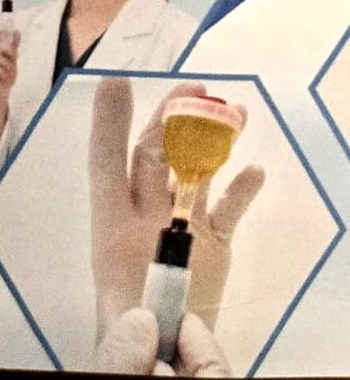
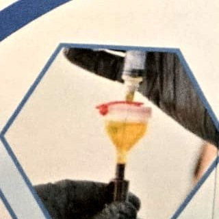
Состав. Компоненты цельной крови чётко разделяются на плазму (55 %), лейкоцитарную плёнку (< 1 %, содержит лейкоциты и тромбоциты) и эритроциты (45 %).
Универсальная совместимость. Работает со всеми типами центрифуг без специального оборудования.
Повышенная безопасность. Узкое горлышко и нижний регулятор предотвращают случайную аспирацию эритроцитов, гарантируя чистую, хорошо видимую границу.
| Пробирки в форме песочных часов (устаревшие системы) | Набор YCELLBIO‑KIT (современная система) | |
|---|---|---|
| Конструкция | Несколько компонентов | Единый интегрированный блок |
| Объём крови | 25–60 мл | 13,5 мл |
| Объём антикоагулянта | 3–6 мл | 1,5 мл |
| Концентрация PRP | 4–5× (заявленная) | 7–9× |
| Совместимость с центрифугами | Требуется специальная центрифуга | Любая стандартная центрифуга |
| Стоимость процедуры | Выше | Разумная |
| Этапы и сложность | Сложно: 7–8 шагов, ручные вмешательства | Просто: 5–6 шагов, в основном автоматизировано |
Препарат · упаковка
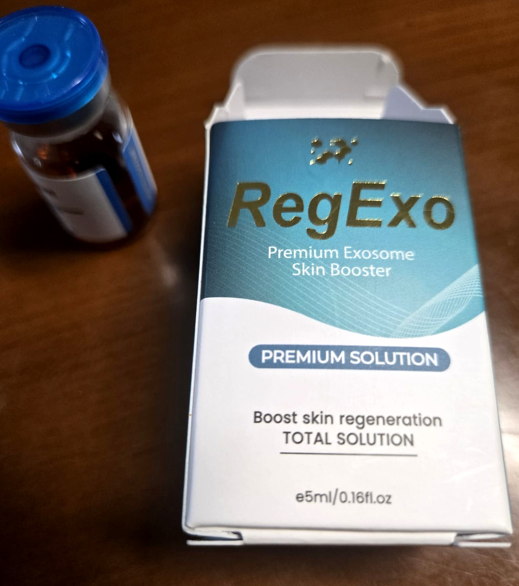
RegExo
Premium Exosome Skin Booster — премиальный экзосомный бустер для кожи
Premium SolutionУсиливает регенерацию кожи
TOTAL SOLUTION — комплексное решение
Объём: 5 мл / 0,16 fl. oz
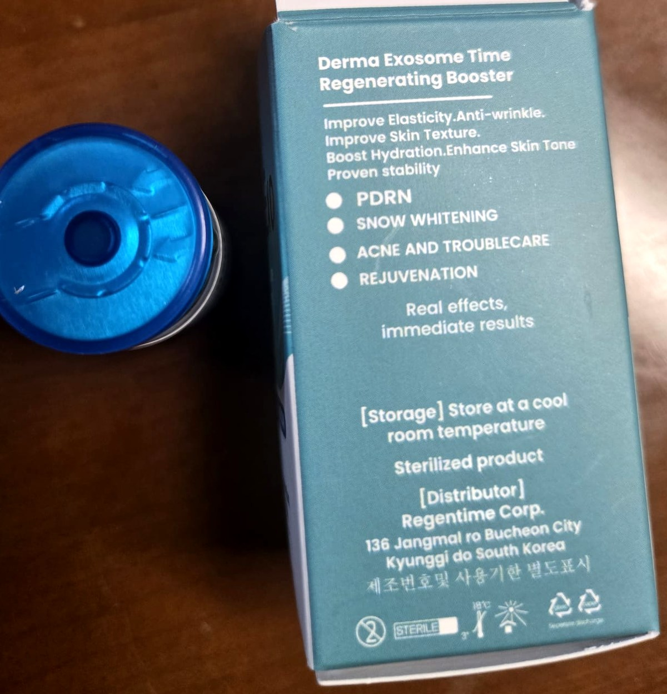
Derma Exosome Time Regenerating Booster
Регенерирующий бустер «Derma Exosome Time»
Повышает эластичность · Разглаживает морщины · Улучшает текстуру кожи · Усиливает увлажнение · Выравнивает тон кожи · Доказанная стабильность
Реальный эффект, мгновенный результат